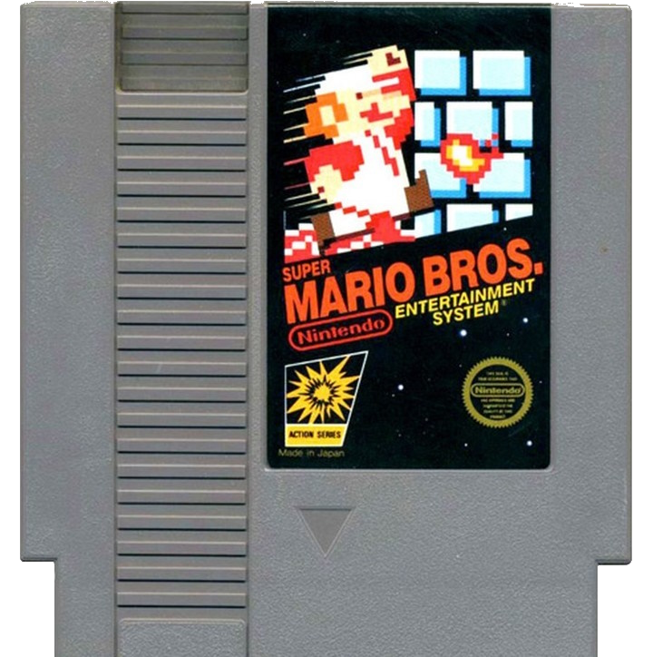
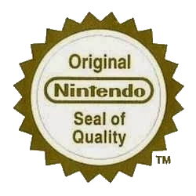
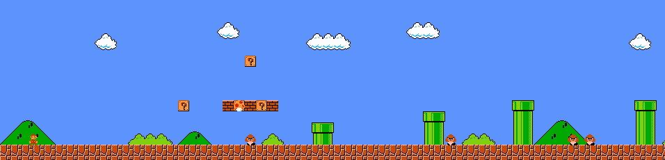

El diseño de Super Mario Bros.
El diseño de Super Mario Bros.

 Crisis de 1983
Crisis de 1983
Como comentamos anteriormente en 1980 empezo la crisis, conocida en japon como el "Atari Shock", esta crisis
comenzo con una caida del 97% de las ganancias en general
por videojuegos, el cierre de grandes marcas desarrolladoras de videojuegos (como Coleco,
Mattel/Intellivision y Magnavox) entre 1983 y 1984.
·El equipo de nintendo entendio este problema como una "saturacion en el mercado", habia demasiados titulos
los cuales eran caros y ademas eran aburridos. el consumidor
promedio no podria diferenciar entre tantas malas opciones cual seria un juego con el cual podria pasar el
rato. por eso la campaña de marketing de nintendo no solo se
baso en darle un diseño original a sus juegos, sino de utilizar un "Sello de calidad de nintendo"

·con este sello de calidad el equipo de nintendo se aseguraba que los que veian sus cartuchos de videojuegos
en el mercado supieran que eran de calidad.
El diseño del 1-1 Super Mario Bros.

Super Mario Bros. enseña al jugador sin requerir de ningun mensaje de texto ni un tutorial, marca clave de la
franquicia durante todos los años posteriores.
El primer nivel de super mario introduce la mecanica de salto, de llegar a la meta pòr la derecha y de los
hongos "buenos" y hongos "malos".
en la primera pantalla el jugador se puede ver atascado ya que no podra ir a la izquierda, habra una pared
invisible que no le deja avanzar.

en la segundo pantalla al avanzar se encontrara con que un hongo empieza a acercarse, si el jugador no usa el
boton de salto morira por lo cual al volver a intentar
podra probar el boton de salto ocurriendo dos cosas, al chocar con uno de los bloques de interrogacion vera un
hongo, y tambien al rebotar vera que al pisar sobre el enemigo
podra matar a este.
en esta simple pantalla se establecen todas las mecanicas principales de super mario bros. como sobrevivir ante
enemigos y los diferentes objetos que le otorgan
beneficios a nuestro jugador
Shigeru Miyamoto y Takashi Tezuka hablaron sobre el extraordinario nivel de reflexión invertido en el
diseño,
comenzando con la icónica apertura del Mundo 1-1:
"El equipo consideró cómo enseñar al jugador varias
habilidades a la vez: cómo evitar enemigos, cómo destruirlos, cómo funcionan los bloques de interrogación y cómo
distinguir un Goomba enemigo de un champiñón útil. Las tres se logran en los primeros pasos de este nivel
inicial.
"Si aparece un enemigo sospechoso", afirma Miyamoto, "el jugador tendrá que saltar por encima". Correr hacia el
primer Goomba simplemente te mata, una lección que el jugador solo necesita aprender una vez antes de descubrir
que está mucho más seguro en el aire. Luego, al avanzar, el jugador descubre algunos ladrillos bajos y bloques
de interrogación.
"Si tenemos un bloque de interrogación, puede que intenten tocarlo también", continúa Miyamoto. Si ven una
moneda, se alegrarán y querrán volver a intentarlo. Al tocar el segundo bloque, se libera un champiñón que se
desliza y rebota en una tubería para lanzarse contra el personaje. El techo bajo dificulta mucho esquivarlo, y
el champiñón golpea a Mario, pero en lugar de dañarlo, lo transforma en Super Mario. En cuestión de segundos,
habrás aprendido cómo funcionan las recompensas y los peligros en el resto de Super Mario Bros."
La produccion:
A mediados de los años 80, no existían los motores gráficos comerciales (como Unity o Unreal) ni las
herramientas digitales modernas para crear videojuegos.
El proceso era completamente artesanal y analógico:
Diseño en papel cuadriculado:
Miyamoto y Tezuka dibujaban literalmente los niveles píxel a píxel a mano sobre hojas de papel gráfico. Cada
cuadro del papel representaba un bloque o un elemento d
el mapa.
El uso de papel cebolla: Si querían hacer una modificación en un nivel ya dibujado, colocaban papel cebolla
(transparente) encima para trazar los cambios.
Esto se hacía para evitar tener que redibujar todo desde cero y mantener los costes controlados.
Traducción a código: Una vez finalizados los mapas en papel, los programadores Nakago y Morita tecleaban
manualmente las coordenadas de cada elemento en
bases de datos para convertirlas en el código ensamblador (lenguaje de máquina) de 8 bits que la consola
pudiera
leer.